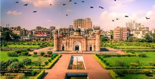
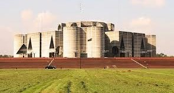

Ahsan Manzil
Ahsan Manzil used to be the official residential palace and seat of the Nawab of Dhaka. The building is situated at Kumartoli along the banks of the Buriganga River in Dhaka, Bangladesh.

Lalbagh Fort
Lalbagh Fort (also Fort Aurangabad) is an incomplete 17th-century Mughal fort complex that stands before the Buriganga River in the southwestern part of Dhaka, Bangladesh.

Sangsad Bhaban
Jatiya Sangsad Bhaban or National Parliament House, is the house of the Parliament of Bangladesh, located at Sher-e-Bangla Nagar in the capital of Dhaka.